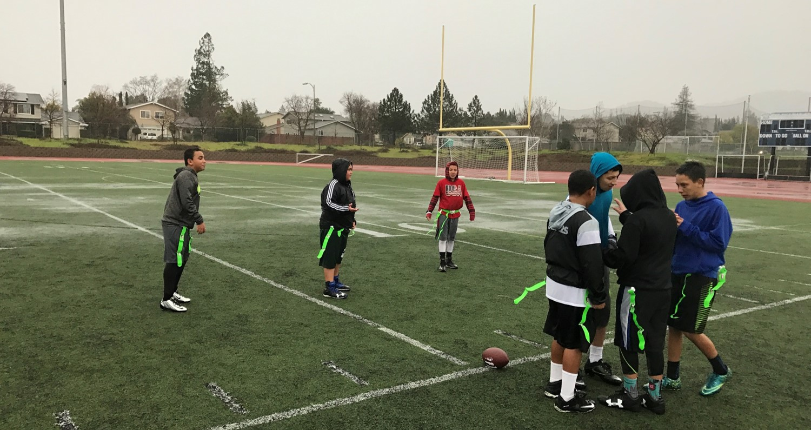
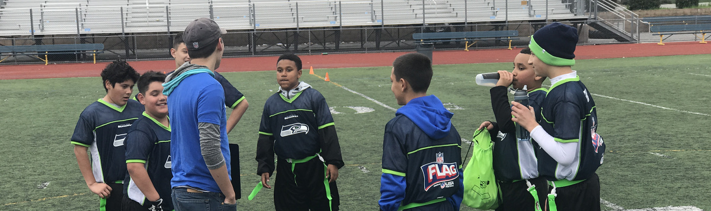
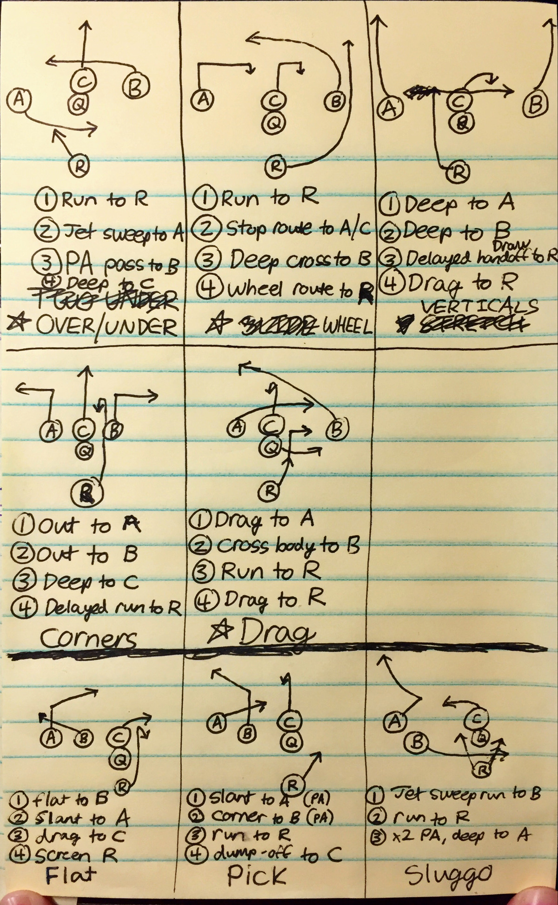
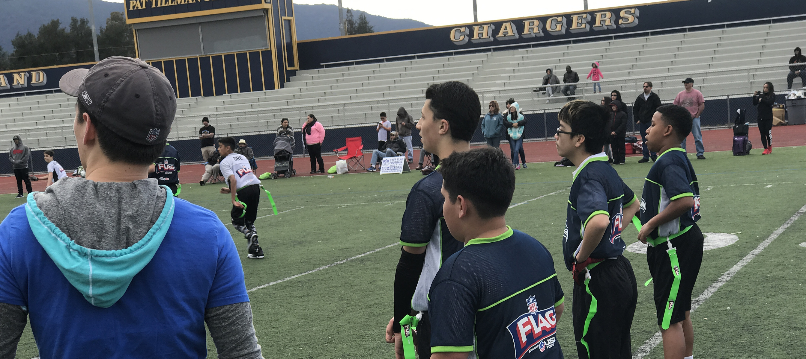
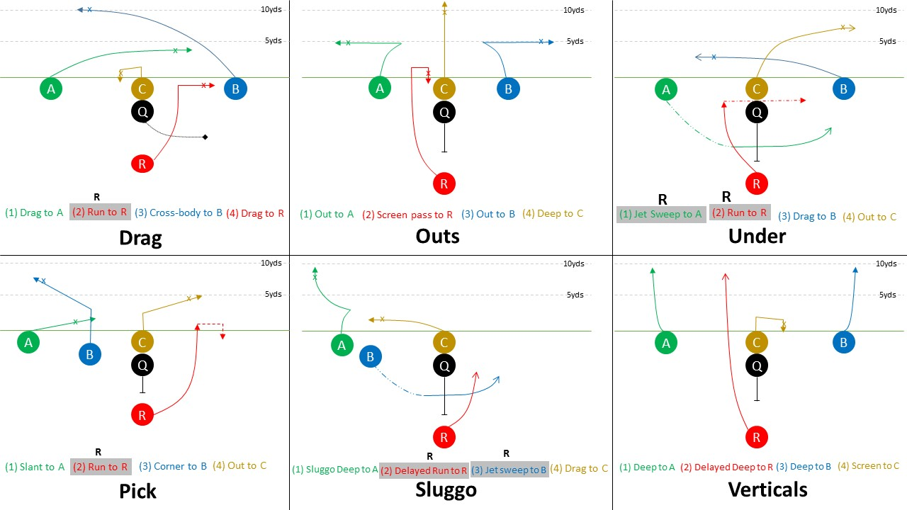

Volunteer Head Football Coach as part of CYFF League
And writing a football playbook for 5v5 flag football from scratch, Winter 2017
From January to March 2017, I'm coaching a youth flag football team of 12-13 year old kids as part of the Cal Youth Flag Football League based out of San Jose. The format of the league is 5v5 and my team has 9 total players. The teams are named after NFL teams and my team was the Seahawks, named after the team I've been a fan of since childhood.
My job as a flag football coach is to put my players in the best position to succeed. That means striking a balance between playing to win and playing to have fun. A competitive experience is a good experience because it makes my players better. But if the experience is too competitive, frustration and anger will push out any opportunities for learning.
Flag football is also very different from tackle football. Football for 12-13 year olds is significantly different than professional football. As a coach, I need to coach for the team I have, not the professional team I don't have. I need to coach for the game we're playing, not the game I think we're playing.
What are the biggest differences in 12-13 flag football?
(1) Good flag-pulling is essential Seriously, I cannot emphasize this enough. Coaches in flag football nearly always focus on offense because it's more attractive and there's more glory to be had. Every single one of the five defenders must be a proficient flag-puller. Short passes turn into touchdowns when the defense misses on flag-pulls. I believe defense comes first - I want to trust in my defense with the game on the line.
(2) Flag football is a run-after-the-catch game, not a deep passing game. With three downs to get to midfield (30 yard distance) and three downs to score after that, every play needs to be a positive play to keep the team moving toward its goal. As a result, nearly all of the plays in our playbook need to be short passes or runs. Based on the arm strength of the 12-13 year old kids alone, passes beyond 15 yards are nearly impossible and incredibly risky.
(3) Misdirection is lethally effective. In regular football, the other team has 11 players able to stop you. In flag football, the defense has 5 players to stop the offense's 5 players. Spreading the defense out in the pros might mean you only have to juke 2 or 3 defenders to break free - if done correctly, flag football can be a one-on-one path to the end zone every single play. All the plays I design are intended to get the ballcarrier moving up field with few defenders around.
My playbook and general playcalling style are perhaps old school. I can summarize the above into three main points:
- 1) Play strong defense
- 2) Short passes and runs on offensive
- 3) Be creative on offense
With those points in mind, I set about to create a playbook that best set up my team for success. And beyond just creating the playbooks, I wanted to figure out how to teach the playbook to my kids without overwhelming them. The most well-crafted playbook in the world is useless if your players can't learn it.
Drafting a playbook
These early sketches were when I began to play with formations and general layouts for playcalling. There was one thing I decided from the very start - the quarterback and center should be positioned consistently between plays. Beyond that, nearly all plays would have the quarterback taking snaps from under center. The risk of dropping a snap (instantly ends the play) goes down and the center gets a much faster route-running release when it's a short snap.
  Following my third principle of misdirection and one-on-one match-ups, I drew up very few "traditional" football plays that involved passing over the middle of the field. Nearly all routes were designed to beat man-on-man coverage with horizontally breaking routes. In the rare event that the other team's defense played zone defense, I prepared a few "flood" plays meant to disrupt a zone defense. All pass plays had mostly short routes.
Another decision I made was to have every player "available" on every play. As in, there are no useless routes - every player has a chance to receive the ball on every play. That being said, there is a primary receiver and a secondary player called on every play (usually a short dump-off pass). This makes the decision really easy on the quarterback. If the main receiver is open, throw to him. If not, dump it off short with an easy pass to either the center or running back.
Since any receiver can be designated the "primary" on any given play, that means each play is actually 4 different plays. This play design makes it much simpler on the quarterback - he only needs to know the primary receiver's route on the play.
The last question was the question of formation. How many plays would I be able to run out of any given formation? The more the merrier. Different formations would give away different plays immediately. If I were to start small and build up, I would start with multiple plays out of the same formation.
For the first week, I decided to just draw up 6 good plays. In each play, four different players could be designated as the primary receiver/runner, so it was really 24 distinct plays if executed correctly. These plays are run out of just two formations. The playbook is shown below:
Seahawks 2017 CYFF Playbook
Every week, the players learn and get up to speed on three new plays. If the players can run the three plays seamlessly, we integrate the play into our routine. Our first game is on February 12, 2017 and as of writing this, we have two weeks to learn the playbook. At practice, we will use this playbook and other drills (for flag pulling and route running) to improve on the fundamentals and prepare for the game.